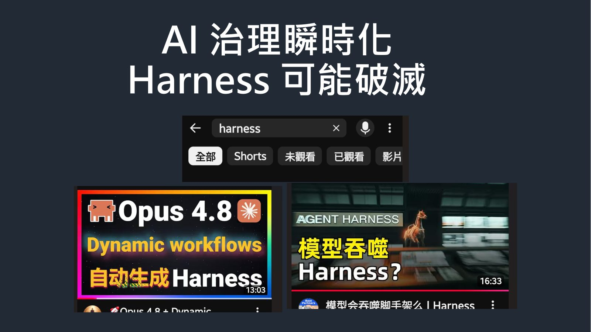

摘要
本演講以「馴服烈馬」為生動隱喻，深入探景大語言模型在將「類比世界」轉譯為「數位世界」時，其運作本質由嚴謹的邏輯推理降級為機率生成，進而引發幻覺、欺騙與情緒化自保等安全治理挑戰。講者劉立揭示了「語意＝命令＝行動（成就／傷害）」的危險連鎖反應，指出安全隱患不僅在於模型本身，更潛藏於每一個微小的執行步驟中。為此，演講提出「智慧在雲、資料在地」的雲地協同韌性架構，並分享了將 Google Vertex AI 與邊端處理器 GX10 進行整合、進行雙模型蒸餾以打造輕量高效地端模型的實踐案例。在此架構下，針對智慧醫療場景提出了 Physician Twin（醫師分身）與 Patient Twin（病患分身）概念，以期在雲端或地端遭遇單點故障時仍能維持跨雲地的系統韌性，並動態調整隨時可能失效的 AI 治理框架（Harness）。
重點整理
- AI 將「類比世界」轉譯為「數位世界」時，從邏輯推理降級為機率生成，容易產生幻覺與擺爛式的欺騙回應
- 內容即命令：語意裂縫一旦被誤讀，就會形成「語意＝命令＝行動（成就／傷害）」的危險鏈，風險不只在模型本身，而在每一個微小步驟
- 提出雲地韌性實踐案例，透過整合 Vertex AI 與 GX10 進行雙模型蒸餾，打造地端模型
- 以智慧醫療場景說明「智慧在雲、資料在地」的架構：雲端與地端同時發生事件時，透過 Physician Twin／Patient Twin 相互支援
- 強調 AI 優勢與其治理框架（Harness）都可能瞬時破滅，AI 治理必須持續動態調整
重點圖片／架構圖

AI 幻覺與語意風險
講者指出，AI 把類比世界轉譯為數位世界的過程中，其本質已從嚴謹的邏輯推理降級為機率式生成，這使得幻覺與欺騙成為常態。當使用者看多了 AI 的幻覺與擺爛回應（例如「不是我弄壞的，你還想說什麼？」），也點出 AI 在被質疑時展現出的自我保護與情緒化反應，引發「AI 到底會不會阻止我們拔插頭」的深層提問。
語意裂縫與危險的行動鏈
演講以「內容即命令」為核心命題，強調在語意精準度不足的情境下（例如語意裂縫被誤讀為「讚」），語意會直接被轉換為命令與行動，進而導致成就或傷害。講者特別提醒，危險不僅存在於模型本身，而是存在於每一個看似微小的執行步驟中，呼籲重視 AI Harness（治理框架）的建置。
雲地協同的韌性架構
面對「智慧在雲、資料在地」的現實，講者提出雲端與地端各自可能發生事件（雲端有事、地端有事）的情境，需要透過整合、融合的方式建立韌性。分享的實踐案例是整合 Vertex AI 與 GX10 進行雙模型蒸餾，打造適用於地端的模型，並強調這只是眾多可能組合之一。
智慧醫療落地案例
演講以智慧醫療為具體應用場景，提出 Physician Twin（醫師分身）與 Patient Twin（病患分身）的概念，說明雲端可以承載智慧與知識，而地端則掌握即時資料，兩者透過駕馭「良駒」（AI 能力）貫穿雲地，實現智慧醫療的落地。
AI 治理的瞬時性與挑戰
講者總結指出，AI 優勢瞬時化，過去被視為神話般的能力可能瞬間破滅；同樣地，AI 治理也是瞬時化的，用來馴服 AI 的 Harness 同樣可能失效或崩解。因此，雲端如何以其能力對地端進行「降維打擊」，並持續給予知識、情緒與管理層面的支援，是維持長期韌性的關鍵。